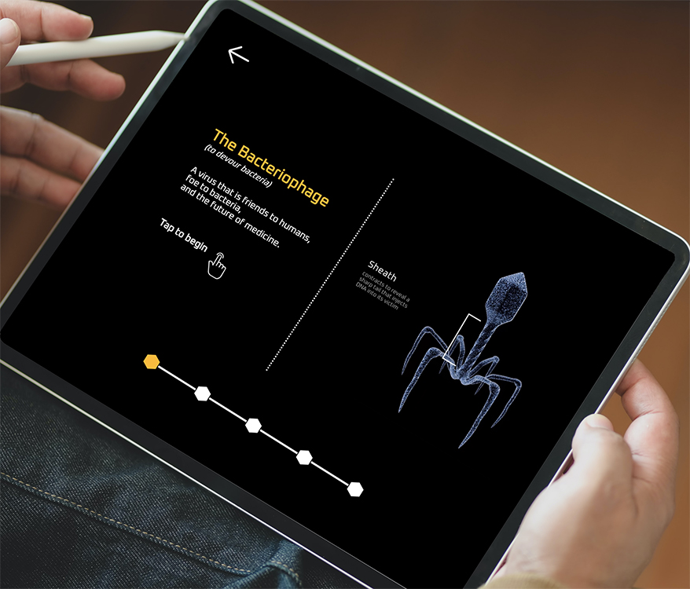

The Bacteriophage
Interactive Educational App
I envisioned this application being used in a museum environment as an educational tool. I began this project by designing an effective method to communicate the unique story of the life of a Bacteriophage and its importance in medicine. I built and animated all of the models within Cinema 4D and exported them for use in my custom designed and built web application.
Technology used
HTML
CSS
Javascript
Greensock
Cinema 4D
Adobe After
Effects
Like what you see?
Give me a shout!

Contact


© 2020 Cadence Watson. All Rights Reserved.